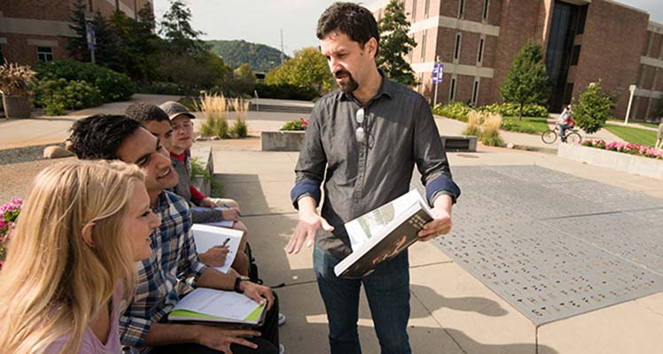

Recreation, tourism, therapeutic recreation/h1>

Recreation, Tourism and Therapeutic Recreation at Winona State University
With nearly 210 Recreation studies programs across the nation, Winona State University's RTTR program was ranked 13th for best value bachelor’s degree in parks, recreation, and leisure.
This complements Winona State’s other awards:
- “America’s 100 Best College Buys”- for 19 consecutive years (Institutional Research and Evaluation)
- “Best in the Midwest” – for 11 consecutive years (The Princeton Review)
During a Feb. 2018 external review, a professor from another university said this was RTTR's strength:
"A strong student-centered approach might be the Department’s identity. I witnessed it first-hand during my visit, and students were adamant that I appreciate how highly it is valued in the Department. While important in the classroom, the students appreciated it most in their non-classroom interactions with faculty. The common theme was that RTTR gave them a home on campus. For many, the welcome they received when they first came to Memorial Hall to inquire about the programs was the reason that they entered one of the two majors. Students said that they felt every instructor cared about their success." (Dr. Steve Simpson)
Classes im taking:
RTTR144
Main page